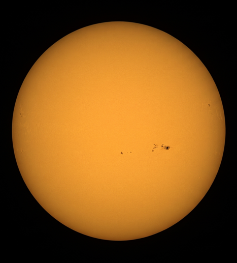
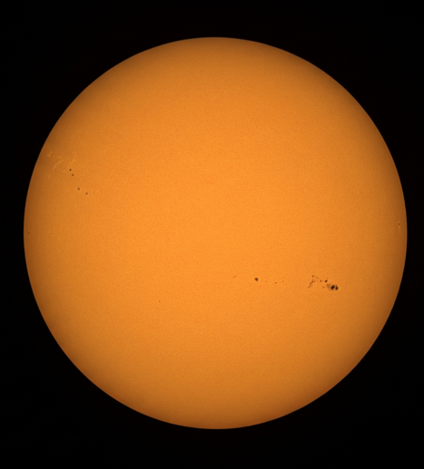
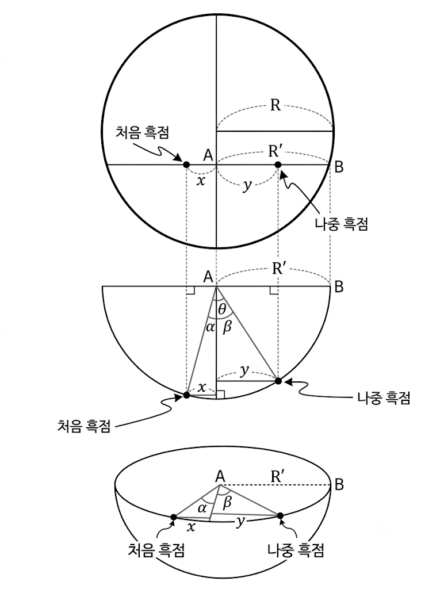

흑점 이동을 통한 태양의 자전 주기 및 각속도 측정
탐구 목표
- • 태양의 실제 관측 사진을 비교하여 흑점의 이동 궤적을 파악할 수 있다.
- • 2차원 평면에 투영된 흑점의 이동을 삼각함수를 적용해 3차원 구면 회전각으로 변환할 수 있다.
- • 흑점의 이동 각속도로부터 태양의 겉보기 자전 주기(회합 주기)와 지구 공전을 보정한 실제 자전 주기(항성 주기)를 구할 수 있다.
관련 개념: 태양의 차등 자전
태양은 단단한 고체가 아닌 고온의 플라스마 기체 상태로 이루어져 있어 위도에 따라 회전 속도가 달라지는 차등 자전(differential rotation)을 합니다. 적도 부근은 약 25일, 극 부근은 약 35일의 자전 주기를 갖습니다.
지구에 위치한 관측자가 태양 표면의 흑점 이동을 추적해 자전 주기를 측정할 경우, 지구가 태양 주위를 공전하는 효과가 더해져 실제 자전 주기보다 약 2일가량 긴 약 27일 내외의 회합 자전 주기로 관측됩니다. 따라서 2차원 투영 사진 속 흑점의 위치 변화를 3차원 구면 삼각비로 환산하여 중심 회전각을 구한 뒤, 지구의 공전 효과를 보정하면 태양의 실제 자전 주기와 물리적 특성을 정량적으로 도출할 수 있습니다.
실제 태양 관측 사진 및 픽셀 거리 측정 도구
사진 위를 클릭하면 세로 중심선(자오선)으로부터 떨어진 픽셀 거리($d$)가 자동으로 계산되어 표시됩니다.


• 2일차 관측: 2026년 11월 11일 14시 43분 (시간차: 24시간 + 1시간 4분 = 25시간 4분)
📊 사진 측정 데이터 입력 (모니터 상의 픽셀(px) 또는 자로 잰 길이(mm))
위 측정 도구로 측정한 값이나 자로 직접 잰 수치를 아래 빈칸에 직접 기입하세요.
태양 중심에서 원반 가장자리까지의 반지름
흑점이 위치한 위선에서의 수평 반지름 (미입력 시 $R$ 적용)
중심 자오선에서 1일차 흑점까지의 수평 거리
중심 자오선에서 2일차 흑점까지의 수평 거리
삼각비를 이용한 중심 회전각($\Theta$) 유도

태양 북극 상공에서 내려다본 투영 모형 : $\sin\theta = \frac{d}{r}$ (또는 $\frac{d}{R}$)
삼각비($\arcsin$)를 적용한 중심 회전각 유도 원리
태양은 3차원 구형이므로, 2차원 평면 사진에 투영될 때 태양 가장자리(Limb)로 갈수록 원근 투영에 의해 거리가 압축되어 왜곡됩니다. 따라서 태양 중심으로부터 흑점의 겉보기 수평 거리 $d$와 반지름 $r$ 사이의 직각삼각형에서 $\sin\theta = \frac{d}{r}$ 관계를 유도한 뒤, 역삼각함수($\arcsin$)를 통해 실제 구면 중심각 $\theta$를 구합니다.
비례식을 이용한 태양의 자전 주기 계산하기
<활동 1>에서 구한 회전각과 관측 자료를 바탕으로 흑점이 한 바퀴($360^\circ$) 자전하는 데 걸리는 시간을 측정해 봅시다. 아래 과제의 각 단계별 빈칸을 직접 채워가며 태양의 겉보기 회합 자전 주기와 일일 각속도를 도출해 보세요.
✍️ [과제] 관측 자료 기반 단계별 빈칸 채우기
태양의 자전 주기는 실제 자전주기일까? 실제 태양의 자전 주기를 구해보자
<활동 2>에서 구한 태양의 자전 주기는 실제와 어떤 차이가 있을까? (Hint. 지구의 공전, 회합주기)
태양이 자전하는 동안 지구 역시 태양 주위를 하루에 약 $0.986^\circ$ ($360^\circ / 365.25\text{일}$)씩 태양 자전과 같은 방향(반시계 방향)으로 공전합니다.
따라서 지구에서 흑점이 원래 위치에 다시 오기 위해서는 태양이 실제 1회 자전($360^\circ$)을 마친 후, 지구가 공전해간 각도만큼 추가로 더 자전해야만 합니다. 그 결과 지구에서 관측한 회합 자전 주기($S$)는 실제 태양의 항성 자전 주기($P$)보다 약 2일가량 길게 관측됩니다.
태양의 실제 항성 자전 주기 ($P$)
회합 주기 $S$, 지구 공전 주기 $E = 365.25$일 적용 계산 결과
우리가 구한 태양의 자전 주기와 실제 태양의 자전주기 데이터 비교 및 오차 분석
| 번호 | 비교 및 분석 항목 | 값 (수치 / 결과) |
|---|---|---|
| 1 | 태양 흑점 사진을 통해 구한 태양의 자전 주기(일) | 일 |
| 2 | 태양의 실제 자전 주기(일) 천문학 공인 이론값 (적도 부근 약 25.0일, 위도 15° 약 25.4일) | 일 |
| 3 | 오차율 (%) $$\text{오차율} = \frac{|\text{측정값} - \text{실제값}|}{\text{실제값}} \times 100\%$$ |
- %
|
활동지 작성을 모두 마치셨나요?
학번과 이름을 다시 한번 확인하신 후 [활동지 인쇄 / PDF 저장] 버튼을 눌러 인쇄하거나 PDF 파일로 저장하여 선생님께 제출하세요.